조경기사 (2018-03-04 기출문제)
1과목: 조경사
1. 다음 중 A와 B에 해당하는 것은?
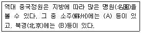
- A : 유원(留園), B : 졸정원(拙政園)
- A : 자금성(紫禁城B), B : 원명원 이궁(園明園離宮)
- A : 졸정원(拙政園), B : 원명원 이궁(園明園離宮)
- A : 만수산 이궁(萬壽山離宮), B : 사자림(師子林)
(정답률: 85%)

2. 고려시대 궁원에 관한 기록에서 동지(東池)는 5대 경종에서 31대 공민왕에 이르기까지 자주 나타나고 있다. 기록상으로 추측할 때 동지에 대한 설명으로 틀린 것은?
- 정전(政殿)인 회경전 동쪽에 위치
- 연꽃을 감상하기 위한 정적인 소규모 연못
- 연못 주변과 언덕에 누각 조성
- 학, 거위, 산양 등을 길렀던 유원 조성
(정답률: 62%)
3. 안동 하회마을 부용대에서 체험할 수 있는 다차원적 놀이문화와 관계가 먼 것은?
- 천천히 줄에 매달려 강을 건너는 불
- 독특한 송진 타는 냄새 맡기
- 짚단에 불 붙여 절벽 아래 던지기
- 물 위에 술잔 띄워 돌리기
(정답률: 84%)
4. 이슬람 정원에서 4개의 수로로 분할되는 4분 정원의 기원은?
- 마스지드(al-Masjid)
- 차하르 바그(Chahar Bagh)
- 지구라트(Ziggurat)
- 마이단(Maidan)
(정답률: 72%)
5. 통일신라시대 경주의 도시구획 패턴으로 가장 적합한 것은?
- 직선형
- 격자형
- 십자형
- 동심원형
(정답률: 82%)
6. 서원의 외부공간 구성요소가 아닌 것은?
- 성생단
- 관세대
- 소전대
- 정료대
(정답률: 49%)
7. 16~17C의 네덜란드 정원에서 흔히 볼 수 있었던 정원 시설물이 아닌 것은?
- 캐스케이드
- 창살울타리
- 화상(花床)
- 정자
(정답률: 63%)
8. 중세 스페인 알함브라 궁원의 주정으로 일명 “천인화의 파티오”라 불리는 것은?
- 사자의 파티오
- 연못의 파티오
- 다라하의 파티오
- 레하의 파티오
(정답률: 66%)
9. 다음 중 동일한 서원 공간에 존재하지 않는 것은?
- 송죽매국
- 절우사
- 시사단
- 관어대
(정답률: 50%)
10. 19세기에 공공공원(public park)을 마련한 기본적인 원인이 아닌 것은?
- 포스트모더니즘의 등장
- 공중위생에 대한 관심
- 국민의 도덕에 대한 관심 증가
- 낭만주의적·미적인 관심 증가
(정답률: 57%)
11. 조선시대 주례고공기(周禮考工記)의 적용에 관한 설명 중 옳지 않은 것은?
- 조선 궁궐을 만드는 원칙 가운데 하나이다.
- 삼조삼문의 치조는 정전과 편전이 있는 곳을 의미한다.
- 우리나라에서는 전조후시 원칙을 적용하여 궁궐을 조성했다.
- 삼조삼문의 외조는 신하들이 활동하는 관청이 있는 곳이다.
(정답률: 60%)
12. 경복궁의 아미산(峨嵋山)원에서 볼 수 있는 경관요소가 아닌 것은?
- 굴뚝
- 정자
- 석지(石池)
- 수조(水槽)
(정답률: 66%)
13. 중국의 북경에 있는 원명원(圓明園)에 관한 설명 중 옳은 것은?
- 강희(康熙)황제가 꾸며 공주에게 넘겨준 것이다.
- 1860년에 침략한 일본군에 의하여 파괴 되었다.
- 원명원을 중심으로 동쪽에는 만춘원이 있고, 남동쪽에는 장춘원이 있다.
- 뜰(園)안에는 대 분천(噴泉)을 중심으로 하는 프랑스식 정원이 꾸며져 있다.
(정답률: 70%)
14. 다음 중 카지노가 테라스 최상단에 위치한 빌라는?
- 에스테
- 란테
- 알도브란디니
- 코르도바
(정답률: 78%)
15. 고대 그리스의 공공조경이 아닌 것은?
- 아도니스원
- 성림
- 아카데미
- 김나지움
(정답률: 73%)
16. 정원시설과 관련된 인물의 연결이 적절하지 않은 것은?
- 오곡문 - 양산보
- 암서재 - 송시열
- 초간정 - 권문해
- 동천석실 - 정영방
(정답률: 44%)
17. 다음 중 베티가(House of vettii)의 설명으로 맞지 않는 것은?
- 고대 그리스 별장에 속한다.
- 실내공간과 실외공간의 구분이 모호하다.
- 2개의 중정과 지스터스로 이루어져 있다.
- 아트리움(Atrium)과 페리스틸움(Peristylium)을 갖추고 있다.
(정답률: 54%)
18. 영국 버컨헤드(Birkenhead) 공원의 설계자는?
- Humphry Repton
- Joseph Paxton
- Joseph Nash
- Robert Owen
(정답률: 78%)
19. 일본정원에 학도(鶴島)와 구도(龜島)가 함께 조성된 정원은?
- 용안사 석정
- 은각사 향월대
- 서방사 이끼정원
- 남선사 금지원
(정답률: 53%)
20. 고대 서부아시아 수렵원(Hunting Park)에 관한 설명으로 가장 거리가 먼 것은?
- 오늘날 공원(park)의 시초가 된다.
- 인공으로 호수와 언덕을 만들고, 물가에 신전을 세웠다.
- 소나무, 사이프러스에 대한 관개를 위해 규칙적으로 식재하였다.
- 니네베(Nineveh)의 인공 언덕 위에 세워진 궁전 사냥터가 유명하다.
(정답률: 72%)
2과목: 조경계획
21. 공장배치 및 조경의 체계에 가장 부합되지 않는 것은?
- 일반적으로 입구 정면에 수위실을 두어 근무자와 화물의 출입을 통제한다.
- 관련도가 높은 공장들은 모이게 배치하고, 관련성이 없는 것은 떨어지게 배치한다.
- 외부공간에 도입되는 설계요소를 단순화시켜 작업 효율의 향상에 기여한다.
- 직접 제조활동, 간접 제조활동, 자원설비공간, 부수보조공간 및 후생지원공간들이 공장조경에 고려되어야 한다.
(정답률: 57%)
22. 다음 중 도로조경 계획의 설명으로 가장 거리가 먼 것은?
- 주변 토지이용과 노선의 구조적 특성 및 시각적 효과를 고려한 식재 및 시설물 배치를 한다.
- 철도, 도로 등 다른 교통과 교차점이 많은 노선에 효율적으로 배치한다.
- 절·성토의 균형 및 완만한 구배를 얻는 노선을 계획하도록 한다.
- 가능한 곡선반경을 크게 주어 운전자가 되도록 직선에 가까운 노선으로 느끼게 한다.
(정답률: 64%)
23. 도시공원 및 녹지 등에 관한 법률 시행규칙상 도시농업공원의 공원시설 부지면적 기준은?
- 100분의 20이상
- 100분의 40이하
- 100분의 50이하
- 100분의 60이하
(정답률: 55%)
24. 통경(vista)의 배치 방법으로 가장 거리가 먼 것은?
- 시점, 종점의 물체, 연결공간이 시각적 단위를 형성하도록 한다.
- 종점에서 시점을 보는 역 통경(reverse vista)은 피한다.
- 종점의 물체를 몇 개의 시점에서 보도록 배치할 수 있다.
- 종점의 물체를 부분적으로 보이도록 배치할 수 있다.
(정답률: 64%)
25. 외부 공간 설계에 관한 세부 설계 기법의 설명으로 옳지 않은 것은?
- 소공원(mini-park) 주변의 자동차 소음을 완화하기 위하여 폭포를 설치하였다.
- 인간적 척도(human scale)를 위하여 60층 건물의 입구에 돌출된 현관을 따로 만들었다.
- 사적지의 엄숙함을 강조하기 위하여 고운 질감을 가진 수목 위주로 식재하였다.
- 어린이 놀이 시설에 즐거움을 더해주기 위하여 중성색 위주로 색칠하였다.
(정답률: 71%)
26. 리모트 센싱에 의한 환경해석의 특징이 아닌 것은?
- 광역적인 환경을 파악할 수 있다.
- 시각적 선호도에 의한 경관을 예측할 수 있다.
- 시간적 추이에 따른 환경의 변화를 파악할 수 있다.
- 특정지역의 환경 특성을 광역 환경과 비교하면서 파악할 수 있다.
(정답률: 64%)
27. 다음 설명에 해당하는 표지판의 종류는?
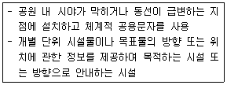
- 안내표지
- 해설표지
- 유도표시
- 주의표시
(정답률: 60%)
28. 다음 중 안내시설의 계획 시 고려사항으로 옳지 않은 것은?
- 도시의 CIP개념과 독자적으로 계획하는 것이 바람직하다.
- 야간 이용을 고려하여 조명시설을 반영하는 것이 필요하다.
- 재료는 내구성·유지관리성·경제성·시공성·미관성·환경친화성 등 다양한 평가항목을 고려하여 종합적으로 판단한다.
- 이용자에게 시각적 방해가 되는 장소는 피하여야 하며, 보행 동선이나 차량의 움직임을 고려하여 배치하여야 한다.
(정답률: 77%)
29. 도시구성에 있어서 도로의 위계 체제를 명확히 함과 동시에 거주환경지역(Environmental Area)을 설정하여 일상생활에서 보행자를 우선하도록 주장한 보고서는?
- Barlow Report
- Buchanan Report
- Utwatt Report
- Regional survey of New York and its Environs Vol.III
(정답률: 59%)
30. 일반적인 스카이라인 형성기준과 거리가 먼 것은?
- 단일 고층건물의 배경에 산이 있을 경우, 건물의 높이는 산 높이의 60~70%가 되게 한다.
- 고층건물 주변에 일정 높이의 건물이 있을 경우, 고층건물의 높이는 주변 건물 높이의 160 - 170%가 되게 한다.
- 주변건물에 비하여 현저하게 높은 건물은 위로 갈수록 좁아지는 피라미드 또는 첨탑 형태로 한다.
- 신도시와 같이 고층건물을 집합적으로 계획할 경우, 주요 조망점에서 볼 때 하나의 형태로 겹쳐서 보이게 한다.
(정답률: 56%)
31. 특정 대상이 지닌 의미를 파악하고자 할 때 여러 단어로 구성된 목록을 통해 자신들이 느끼는 감정의 정도를 측정하는 방법은?
- 직접관찰
- 물리적 흔적 관찰
- 어의구분척도
- 리커드 태도 척도
(정답률: 66%)
32. 주차장에 대한 설명으로 맞는 것은?
- 노외주차장의 출입구 너비는 3.0미터 이상으로 하여야 한다.
- 경형차의 평생주차 형식의 주차구획은 폭 1.5m, 길이 4m로 한다.
- 노상주차장은 너비 4미터 미만의 도로에 설치하여서는 아니 된다.
- 주차단위구획이란 자동차 1대를 주차할 수 있는 구획을 말한다.
(정답률: 55%)
33. 도시공원 및 녹지 등에 관한 법률의 설명으로 틀린 것은?
- 10만제곱미터 이하 규모의 도시공원을 새로 조성하는 경우 공원녹지기본계획 수립권자는 공원녹지기본계획을 수립하지 아니할 수 있다.
- 공원녹지기본계획에는 도시녹화에 관한 사항 및 공원녹지의 종합적 배치에 관한 사항 등이 포함되어야 한다.
- 도시·군관리계획 중 도시공원 및 녹지에 관한 도시·군관리계획은 공원고지기본
- 도시녹화계획에는 「자연공원법」에 따라 도시지역의 녹지를 체계적으로 관리하기 위하여 수립된 시책이 반영되어야 한다.
(정답률: 40%)
34. 생태(연)못의 조성과 관련된 설명으로 틀린 것은?
- 바닥의 물 순환을 위하여 바닥물길을 설계한다.
- 자연 지반 내에 생태연못 조성 시 방수시트를 사용하여 물을 담수한다.
- 종다양성을 높이기 위해 관목숲, 다공질 공간 등 다른 조생물권과 연계되도록 한다.
- 흙, 섶단, 자연석 등 자연재료를 도입하고 주변에 향토수종을 배식하여 자연스런 경관을 형성한다.
(정답률: 72%)
35. 자연공원 계획 시 필요한 적정 수용력의 분석에 해당되지 않는 것은?
- 물리적 수용력
- 사회적 수용력
- 생태학적 수용력
- 심리적 수용력
(정답률: 54%)
36. 공원 녹지의 수요 분석 방법 중 양적 수요 산정 방법이 아닌 것은?
- 생태학적 방식
- 생활권별 배분 방식
- 심리적 수요에 의한 방식
- 공원 이용률에 의한 방식
(정답률: 61%)
37. 건축법 시행령에 따른 대지의 조경이 필요한 건축물은?
- 축사
- 녹지지역안에 건축하는 건축물
- 면적 3,000m2인 대지에 건축하는 공장
- 상업지역의 연면적 합계가 2,000m2인 물류시설
(정답률: 47%)
38. 다음 중 환경심리학에 관한 설명 중 옳지 않은 것은?
- 환경과 인간행위 상호간의 관계성을 연구 한다.
- 사회심리학과 공동의 관심분야를 많이 지니고 있다.
- 이론적이고 기초적인 연구에만 관심을 둔다.
- 다소 정밀하지 않더라도 문제해결에 도움이 되는 가능한 모든 연구방법을 사용한다.
(정답률: 77%)
39. 조경 공사업의 등록기준으로 틀린 것은?
- 개인 자본금의 경우 7억원 이상
- 「건설기술 진흥법」에 따른 토목 분야 초급 건설기술자 1명 이상
- 「건설기술 진흥법」에 따른 건축 분야 초급 건설기술자 1명 이상
- 「국가기술자격법」에 따른 국토개발 분야의 조경기사 또는 「건설기술 진흥법」에 따른 조경 분야의 중급 이상 건설기술자인 사람 중 2명을 포함한 조경분야 초급 이상의 건설기술자 4명 이상
(정답률: 69%)
40. 여가활동을 증가시키고 있는 요소 중 가장 관계가 적은 것은?
- 소득의 증대
- 교육수준의 향상
- 맞벌이 가정의 증가
- 인간서비스 및 사회복지의 확충
(정답률: 72%)
3과목: 조경설계
41. 일반적으로 경관분석 기법과 그 분석 내용을 잘못 짝지은 것은?
- 계량화 방법 : 특이성비의 산출
- 사진에 의한 방법 : 지각 횟수와 지각 강도의 산출
- 기호화 기법 : 조망시점에서 본 경관의 특성과 형태
- 시각회랑에 의한 방법 : 경관우세 요소와 변화 요인 파악
(정답률: 59%)
42. 도심 소공원의 설계과정에서 초기 단계에서 분석되어야 할 요소가 아닌 것은?
- 주변건물의 용도와 형태
- 보행자 동선의 유입 방향
- 투자에 대한 경제적 효용성
- 이용자 특성에 따른 도입활동의 선정
(정답률: 72%)
43. 다음 제도의 선 중 위계(hierarchy)가 굵음에서 가는 쪽으로 옳게 나열 된 것은?
- 식생 → 인출선 → 도로
- 단면선 → 구조물 → 주차선
- 건물외곽 → 도로 → 주차선
- 치수선 → 단면선 → 건물외곽
(정답률: 69%)
44. 다음 중 조경포장 설계와 관련된 설명으로 틀린 것은?
- 「간이포장」 이란 비교적 교통량이 적은 도로의 도로면을 보호ㆍ 강화하기 위한 도로포장으로 주로 차량의 통행을 위한 아스팔트콘크리트포장과 콘크리트포장을 제외한 기타의 포장을 말한다.
- 포장재를 선정할 때에는 내구성ㆍ 내후성ㆍ 보행성ㆍ 안전성ㆍ 시공성ㆍ 유지관리성ㆍ 경제성ㆍ 환경친화성 그리고 관련 법규 등을 고려한다.
- 포장용 점토바닥벽돌을 흡수율 10% 이하, 압축강도 20.58MPa 이상, 휨강도는 5.88MPa 이상의 제품으로 한다.
- 포장지역의 표면은 배수구나 배수로 방향으로 최소 0.3% 이하의 기울기로 설계한다.
(정답률: 57%)
45. 다음 입체도의 화살표 방향 투상도로 가장 적합한 것은?
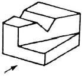
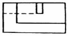
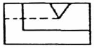
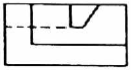
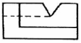
(정답률: 71%)
46. 일반적인 제도 용지의 규격(㎜)이 틀린 것은?
- A1 : 594 × 841
- A4 : 210 × 297
- B2 : 515 × 728
- B5 : 257 × 364
(정답률: 59%)
47. 투시도에서 물체가 기면에 평행으로 무한히 멀리 있을 때 수평선 위의 한 점으로 모이게 되는 점은?
- 사점
- 대점
- 정점
- 소점
(정답률: 72%)
48. 오스트발트(Ostwald) 표색계에 대한 설명 중 옳지 않은 것은?
- 무채색, 유채색 모두 W + B + C =100% 이다.
- 헤링(E. Hering) 의 4원색 설을 기본으로 하였다.
- 혼합하는 색량의 비율에 의하여 만들어진 체계이다.
- 기본 색채는 순색(C), 이상적 백색(W), 이상적 검정(B) 이다.
(정답률: 54%)
49. 조경계획과 조경설계의 개념적 차이를 설명한 것 중 틀린 것은?
- 조경설계는 미학적 창의성이 많이 요구되는 과정이다.
- 조경설계는 개념상 상위계획으로 조경계획에 선행하여 실행된다.
- 조경계획과 조경설계는 상호 순환적 검증(feed back)을 거쳐 완성된다.
- 조경계획은 문제 해결방안의 합리적인 제시가 많이 요구되는 과정이다.
(정답률: 71%)
50. 일상생활에서 하나하나의 부분적 경관을 체계적으로 연결하여 풍부한 연속적 경험을 줄 수 있도록 “연속적 경관 구성”이라는 관점에서 주로 연구한 학자가 아닌 것은?
- 틸(Thiel)
- 린치(Lynch)
- 할프린(Halprin)
- 아버니티와 노우(Abernathy & Noe)
(정답률: 55%)
51. 제도의 치수기입에 관한 설명으로 옳은 것은?
- 치수는 특별히 명시하지 않는 한, 마무리 치수로 표시한다.
- 치수기입은 치수선을 중단한고 선의 중앙에 기입하는 것이 원칙이다.
- 치수의 단위는 밀리미터(mm)를 원칙으로 하며, 반드시 단위 기호를 명시하여야 한다.
- 치수 기입은 치수선에 평행하게 도면의 오른쪽에서 왼쪽으로 읽을 수 있도록 기입한다.
(정답률: 57%)
52. 건축물설계와 관련된 도면의 작성에서 실시설계 단계의 조경관련 도면의 축척이 옳은 것은? (단, 주택의 설계도서 작성기준을 적용한다.)
- 지주목 상세도 : 1/20 ~ 1/50
- 담장 단면도 : 1/100 ~ 1/200
- 단지종합 안내판 : 1/10 ~ 1/100
- 가로수 식재 평면도 : 1/300 ~ 1/1.000
(정답률: 47%)
53. 먼셀 색입체를 수직으로 절단했을 경우 나타나는 것은?
- 10색상의 채도변화
- 같은 명도의 10색상
- 2가지 반대색상의 명도변화
- 2가지 반대색상의 명도, 채도변화
(정답률: 47%)
54. 색조(Hue key)의 정의를 설명한 것은?
- 강한 엑센트를 주는 색채의 효과
- 색상을 비교하는 데 기준이 되는 색
- 조화적인 색채들이 대비를 파괴하는 색상
- 주색상이 구성의 주조를 결정하게 되는 원리
(정답률: 57%)
55. 조경설계기준상의 하천조경 설계 시 관찰시설 설치와 관련된 내용이 틀린 것은?
- 야생동물이 자주 출현하는 곳에 작은 규모의 야생동물 관찰소를 설치한다.
- 안전을 위한 데크의 난간 높이는 100㎝ 이상으로 하며, 장애자가 이용하는 데크는 최소 80㎝ 의 폭이 확보되도록 계획한다.
- 관찰시설 설치는 생태ㆍ 미관의 교육, 체험 목적으로 설치되나, 서식처 보호, 훼손 확산 방지를 위한 이용객 동선 유도 등 꼭 필요한 장소에 설치한다.
- 관찰시설은 사회적 약자의 배려를 도모하여 진행도중 추락의 위험이 없도록 안전난간을 설치하는 등 안전한 관찰 및 탐방이 가능하도록 설치한다.
(정답률: 67%)
56. 경관의 형식은 자연경관과 문화경관(인공경관)으로 구분된다. 다음 중 자연경관에 속하는 것은?
- 평야경관
- 교외경관
- 경작지경관
- 취락경관
(정답률: 71%)
57. 시각적 선호도(visual preference)의 일반적 측정방법에 해당하지 않는 것은?
- 구두측정(verbal measure)
- 행태측정(behavioral measure)
- 표정측정(expressional measure)
- 정신생리측정(psychophysiological measure)
(정답률: 51%)
58. 린치(Lynch)의 도시의 이미지 형성요소에 포함되지 않는 것은?
- 통로(path)
- 결절점(node)
- 모서리(edge)
- 비스타(vista)
(정답률: 75%)
59. 경관을 구성하는 방법 중 눈앞에 보이는 주위의 자연경관을 어떤 구도(構圖) 속에 포함시켜 그 구도가 한층 큰 효과를 갖도록 교묘히 구성하는 방법은?
- 축경(縮景)
- 차경(借耕)
- 원경(遠景)
- 첨경(添景)
(정답률: 55%)
60. 리듬(Rhythm)과 가장 관련이 없는 것은?
- 대칭
- 반복
- 방사
- 점진
(정답률: 51%)
4과목: 조경식재
61. 11월에 백색 꽃이 피는 수종은?
- Albizia julibrissin
- Lagerstroemia indica
- Fatsia japonica
- Prunus padus
(정답률: 43%)
62. 지주목 설치에 대한 설명 중 틀린 것은?
- 목재를 지주목으로 사용할 경우 각재로서 나왕, 미송이 가장 좋으며, 되도록 방부처리를 하지 않는 것이 좋다.
- 수피가 직접 닿는 부분은 수피가 상하지 않게 보호대를 설치한 후 지주대를 설치한다.
- 대나무 지주의 경우에는 선단부를 고정하고 결속부에는 대나무에 흠을 넣어 유동을 방지한다.
- 지주목 해체는 목재의 경우 5 ~ 6년경과 후 해체하지만 수목이 완전히 활착될 때까지는 설치를 유지하도록 한다.
(정답률: 63%)
63. 공원의 원로나 건물 앞에 어울리는 화단의 형태는?
- 경재화단(border flower bed)
- 기식화단(assorted flower bed)
- 모둠화단(carpet flower bed)
- 침상원(sunken garden)
(정답률: 64%)
64. 다음 중 자연수형이 나머지 3종과 가장 차이나는 것은?
- 전나무(Abies holophylla)
- 구상나무(Abies koreana)
- 느티나무(Zelkova serrata)
- 일본잎갈나무(Larix kaempferi)
(정답률: 61%)
65. 지피식물(地被植物)로 이용하기에 적합한 상록다년초는?
- 자금우
- 골담초
- 수호초
- 협죽도
(정답률: 53%)
66. 미적 효과와 관련한 식재형식 중 경관식재와 밀접한 관계가 없는 것은?
- 표본식재
- 산울타리식재
- 경재식재
- 방풍식재
(정답률: 66%)
67. 식재지의 토양조건에 대한 설명으로 틀린 것은?
- 좋은 토양구조와 토성을 지닌 혼합물
- 느슨하지 않고 쉽게 부스러지지 않는 토양
- 유기질과 양분함량이 높고 물을 저류하거나 배수하기 용이한 토양
- 산소 함량이 지속적으로 높음과 동시에 식물 생육에 적합한 pH를 지닌 토양
(정답률: 57%)
68. 식물 분포의 결정 요인이 아닌 것은?
- 토양조건
- 기후조건
- 인근 종에 대한 친화성
- 변화하는 환경요인에 대한 적응성
(정답률: 64%)
69. 식재지의 토질로서 가장 이상적인 것은?
- 떼알구조로 토양입자 70%, 수분 15%, 공기 15%
- 홑알구조로 토양입자 70%, 수분 15%, 공기 15%
- 떼알구조로 토양입자 50%, 수분 25%, 공기 25%
- 홑알구조로 토양입자 50%, 수분 25%, 공기 25%
(정답률: 67%)
70. 다음 중 요점(要點) 식재와 가장 관련이 먼 것은?
- 경관의 강조
- 위험방지
- 건물의 차폐
- 첨경(添景)
(정답률: 56%)
71. 천이에 대한 설명으로 틀린 것은?
- 식물 군락의 구성종이 변화하여 타군락으로 변하는 것을 천이라 한다.
- 천이가 반복되어 식물군락이 안정된 상태를 극상이라 한다.
- 천이는 자연의 힘에서만 일어나며 인위적 작용은 관계없다.
- 천이가 일어나는 원인은 환경조건의 변화와 관계있다.
(정답률: 72%)
72. 비탈면(법면) 식재공법의 종류 중 식물 도입이 곤란한 불량 토질에 사용하고, 피복 속도가 느리기는 하지만 비료의 효과가 오래도록 계속되는 공법은?
- 식생반공(植生盤工)
- 식생대공(植生袋工)
- 식생혈공(植生穴工)
- 식생조공(植生條工)
(정답률: 46%)
73. 임해매립지 식재 시 염분피해를 줄이기 위해 취할 수 있는 방법으로 틀린 것은?
- 석고, 석회, 염화칼슘 등을 이용하여 염분을 제거한다.
- 염분용탈을 위해 지속적으로 관수한다.
- 투수성이 불량한 곳에는 점질토로 객토한다.
- 마운딩을 하여 식재하거나 객토를 한다.
(정답률: 61%)
74. 잎차례가 대생(對生) 인 수종은?
- 수수꽃다리
- 박태기나무
- 느티나무
- 때죽나무
(정답률: 47%)
75. 다음 중 느티나무(Zelkova serrata Makino) 에 대한 설명이 아닌 것은?
- 내한성이 약하다.
- 성상은 낙엽활엽교목이다.
- 과명은 느릅나무과이다.
- 수피는 오래되면 비늘조각으로 떨어진다.
(정답률: 60%)
76. 상관(相觀) 에 의한 식생 구분은?
- 군계에 의한 것
- 우점종에 의한 것
- 표징종에 의한 것
- 군락 구분종에 의한 것
(정답률: 49%)
77. 배경식재에 관한 설명으로 틀린 것은?
- 고층빌딩군 주변에 적용되는 식재기법으로 자연성을 증진시킨다.
- 설계 시 건물과 연계하여 식재기능으로 충족시킬 수 있는 식재위치의 선정이 중요하다.
- 주로 사용되는 수목은 대교목으로 그늘을 제공하거나 방풍, 차폐기능을 동반한다.
- 자연경관이 우세한 지역에서 건물과 주변경관을 융화시키기 위해서 기본적으로 요구되는 식재기법이다.
(정답률: 46%)
78. 왕버들(Salix chaenomeloides) 에 대한 설명으로 틀린 것은?
- 꽃은 6월에 핀다.
- 잎 뒷면은 흰빛을 띤다.
- 잎이 새로 나올 때는 붉은 빛이 난다.
- 풍치수, 정자목 등으로 이용된 한국전통수종이다.
(정답률: 36%)
79. Cornus 속에 해당되는 수목은?
- 산수유
- 박태기나무
- 팽나무
- 서어나무
(정답률: 62%)
80. 열매가 익었을 때 붉은 색이 아닌 것은?
- 귀룽나무, 작살나무
- 팥배나무, 마가목
- 덜꿩나무, 청미래덩굴
- 딱총나무, 뜰보리수
(정답률: 33%)
5과목: 조경시공구조학
81. 다음 조건을 참고하여 양단면평균법을 사용한 체적은?
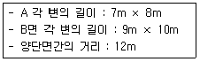
- 568m3
- 876m3
- 1136m3
- 1752m3
(정답률: 62%)
82. 그림과 같은 기둥에서 유효좌굴길이는?
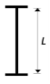
- 0.5L
- 0.7L
- 1.0L
- 2.0L
(정답률: 49%)
83. 미장용 정벌 바르기 또는 벽돌쌓기 줄눈용도로 많이 사용되는 모르타르의 적합한 용적 배합비는?
- 1 : 1
- 1 : 2
- 1 : 3
- 1 : 4
(정답률: 55%)
84. 다음 중 콘크리트에 발생하는 크리프라 큰 경우가 아닌 것은?
- 작용 응력이 클수록
- 재하재령이 느릴수록
- 물시멘트비가 클수록
- 부재 단면이 작을수록
(정답률: 43%)
85. 기반조성공사, 식재공사, 잔디 및 지피ㆍ 초화류공사, 조경석공사, 시설물공사, 수경시설 설치공사 등으로 공사의 과정별로 분할하여 도급계약하는 방식은?
- 전문공종별 분할도급
- 공정별 분할도급
- 공구별 분할도급
- 직종별ㆍ 공종별 분할도급
(정답률: 62%)
86. 다음 수목 굴취공사와 관련된 설명으로 틀린 것은?
- 은행나무와 칠엽수는 나무높이에 의한 굴취품을 적용한다.
- 굴취 시 야생일 경우에는 굴취품의 20%까지 가산할 수 있다.
- 관목의 굴취 시 나무높이가 1.5m를 초과할 때는 나무높이에 비례하여 할증할 수 있다.
- 뿌리돌림은 수목 이식 전에 뿌리분 밖으로 돌출된 뿌리를 깨끗이 절단하여 주근 가까운 곳의 측근과 잔뿌리의 발달을 촉진시키는 작업이다.
(정답률: 47%)
87. 변재(邊材)와 심재(心材)에 대한 설명으로 틀린 것은?
- 수심에 가까운 부위가 변재이다.
- 심재보다 변재가 내후성이 작다.
- 일반적으로 심재는 변재에 비해 강도가 강하다.
- 변재는 심재보다 비중이 적으나 건조하면 변하지 않는다.
(정답률: 61%)
88. 조경 시공관리의 3대 기능에 해당되지 않는 것은?
- 공정관리
- 자원관리
- 품질관리
- 원가관리
(정답률: 52%)
89. 다음 배수관거와 관련된 설명 중 옳지 않은 것은?
- 원형관이 수리학상 유리하다.
- 관거의 매설깊이는 동결심도와 상부하중을 고려한다.
- 배수관거의 유속은 1.0 ~ 1.8m/sec 가 이상적이다.
- 관거는 간선과 지선이 90° 일 때 배수효과가 가장 좋다.
(정답률: 69%)
90. 점토에 대한 설명으로 옳지 않은 것은?
- 순수점토일수록 용융점이 높고 저급점토는 낮다.
- 점토의 일반적 성분은 SiO2, Al2O3, Fe2O3, CaO, MgO 등이다.
- 화학적으로 순수한 점토를 카올린(고령토)이라 한다.
- 침적점토는 바람이나 물에 의해 멀리 운반되어 침적되므로 입자가 크며 가소성이 적다.
(정답률: 63%)
91. 식물의 관수량을 결정하는 요소와 관계가 가장 먼 것은?
- 토양의 침투율(浸透率)
- 토양의 포장용수량(圃場容水量)
- 토양의 위조함수량(萎凋含水量)
- 토양의 유효수분함량(有效水分含量)
(정답률: 54%)
92. 그림과 같은 하중을 받는 단순보의 지점 D에서 휨모멘트 크기는?(문제 오류로 D가 없네요.. 정답은 3번입니다. 여러분들의 많은 의견 부탁 드립니다.)
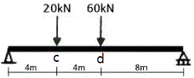
- 90kNm
- 180kNm
- 280kNm
- 360kNm
(정답률: 57%)
93. 다음 중 합성수지에 관한 설명으로 틀린 것은?
- 폴리우레탄수지는 도막 방수재 및 실링재로서 이용된다.
- 폴리스티렌수지는 발포제로서 보드상으로 성형하여 단열재로 사용된다.
- 실리콘수지는 내열성ㆍ 내한성이 우수한 수지로 접착제, 도료로 사용된다.
- 염화비닐수지는 내산ㆍ 내알칼리성이 작지만 내후성이 커서 건축 재료로 널리 사용된다.
(정답률: 57%)
94. 건설공사로 활용되는 석재에 관한 설명 중 틀린 것은?
- 사석(捨石) : 막 깬 돌 중에서 유수에 견딜 수 있는 중량을 가진 큰 돌
- 잡석(雜石) : 크기가 지름 10 ~ 30㎝ 정도의 것이 고르게 섞여진, 형상이 고르지 못한 큰 돌
- 전석(轉石) : 1개의 크기가 0.5m3 내ㆍ 외의 정형화 되지 않은 석괴
- 야면석(野面石) : 호박형의 천연석으로서 지름이 10㎝ 정도 크기의 둥근 돌
(정답률: 54%)
95. 다음 중 횡선식 공정표(Bar Chart)의 특징으로 틀린 것은?
- 복잡한 공사에 사용된다.
- 주공정선의 파악이 힘들어 관리통제가 어렵다.
- 각 공종별 공사와 전체의 공사시기 등이 알기 쉽다.
- 각 공종별의 상호관계, 순서 등이 시간과 관련성이 없다.
(정답률: 58%)
96. 다음 항공사진 측량의 판독에 대한 설명 중 옳지 않은 것은?
- 사진상의 크기나 형상은 피사체의 내용을 판독하기 위하여 중요한 요소이다.
- 사진의 음영은 촬영고도에 따라 변화하기 때문에 판독에는 불필요한 요소이다.
- 사진의 정확도는 사진상의 변형, 색조, 형상 등 제반 요소의 영향을 고려해야 한다.
- 사진의 색조는 피사체로부터의 반사광량에 따라 변화하나 사용하는 필름 현상의 사진처리 등에 따라 영향을 받는다.
(정답률: 66%)
97. 다음 광원(光源)에 대한 설명으로 틀린 것은?
- 백열등 : 광색이 따뜻한 느낌을 주기 때문에 휴식공간 조명에 적당하다.
- 형광등 : 관 내벽의 형광물질로 자외선을 발생시켜 빛을 얻으며 광색이 차다.
- 나트륨등 : 적색을 띤 독특한 광색으로 열효율이 낮고 투시성이 수은등에 비하여 낮다.
- 수은등 : 수은증기압을 고압으로 가압하여 고효율의 광원을 얻으며, 큰 광속(光束)으로 가로 조명에 적합하다.
(정답률: 61%)
98. 다져진 후 토량이 40000m3, 성토에서 원지반토량이 25000m3 일 때 흐트러진 상태의 토량은 몇 m3이 필요한가? (단, 토량변화율은 L=1.30, C=0.85 이다.)
- 1153.85
- 11700
- 22950
- 28676.47
(정답률: 33%)
99. 다음 네트워크에서 주공정선(critical path)은?
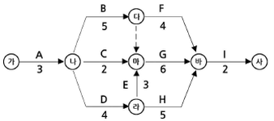
- ㉮→㉯→㉱→㉲→㉳→㉴
- ㉮→㉯→㉰→㉳→㉴
- ㉮→㉯→㉲→㉳→㉴
- ㉮→㉯→㉰→㉲→㉳→㉴
(정답률: 56%)
100. 콘크리트용 혼화재료로 사용되는 고로슬래그 미분말에 대한 설명으로 틀린 것은?
- 고로슬래그 미분말을 사용한 콘크리트는 보통콘크리트보다 콘크리트 내부의 세공경이 작아져 수밀성이 향상된다.
- 플라이애시나 실리카흄에 비해 포틀랜드시멘트와의 비중차가 작아 혼화재로 사용할 경우 혼합 및 분산성이 우수하다.
- 고로슬래그 미분말의 혼합률을 시멘트 중량에 대하여 70% 정도 혼합한 경우 중성화 속도가 보통콘크리트의 1/2정도로 감소된다.
- 고로슬래그 미분말을 혼화재로 사용한 콘크리트는 염화물이온 침투를 억제하여 철근부식 억제효과가 있다.
(정답률: 51%)
6과목: 조경관리론
101. 근로자 2000명이 1일 9시간씩 연간 300일 작업하는 A시설물 제작 작업장에서 1명의 사망자와 의사진단에 의한 60일의 휴업일수를 가져왔다. 이 사업장의 강도율은 약 얼마인가?
- 1.21
- 1.40
- 1.57
- 1.84
(정답률: 32%)
102. 벚나무 빗자루병의 병원체가 속하는 분류 그룹은?
- 자낭균
- 난균
- 담자균
- 불완전균
(정답률: 68%)
103. 질소가 0.5%인 퇴비(이용율 20%) 40톤 중에 유효한 질소량은 몇 ㎏ 인가?
- 10
- 20
- 30
- 40
(정답률: 58%)
104. 재해원인 분석방법의 통계적 원인분석 중 다음에서 설명하는 것은?
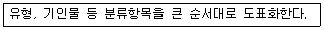
- 관리도
- 파레토도
- 크로스도
- 특성 요인도
(정답률: 58%)
1⑤. 조경식 쌓기의 설명으로 틀린 것은?
- 경관적 목적 또는 구조적 목적으로 조경석을 쌓아 단을 조성하는 경우에 적용한다.
- 가로쌓기는 설계도면 및 공사시방서에 명시가 없을 경우 높이가 1.5m 이하일 때는 찰쌓기로 1.5m 이상인 경우와 상시 침수되는 연못, 호수 등은 메쌓기로 한다.
- 뒷부분에는 고임돌 및 되채움돌을 써서 튼튼하게 쌓아야 하며, 필요에 따라 중간에 뒷길이가 0.6 ~ 0.9m 정도의 돌을 맞물려 쌓아 붕괴를 방지한다.
- 사전에 지반을 조사하여 연약지반은 말뚝박기 등으로 지반을 보강하고 필요한 경우 콘크리트나 잡석 등으로 기초를 보완하는 등 하중에 의한 침하를 방지하여야 한다.
(정답률: 63%)
106. 수목관리와 비교한 수림지 관리만의 고유특성이라 분류하기 어려운 것은?
- 천연갱신의 유도
- 생태적 복원력에 의지
- 정상천이계열의 존중
- 수목생장에 따른 보식 및 갱신
(정답률: 60%)
107. 다음 중 옹벽의 변화 상태를 육안으로 확인할 수 있는 것이 아닌 것은?
- 이음새의 어긋남
- 구조체의 균열
- 침하 및 부등 침하
- 기초의 강도 저하
(정답률: 70%)
108. 레크리에이션 관리의 내용이 아닌 것은?
- 집약적 시설의 제공
- 도시의 무질서한 확산 방지
- 접근성이 필수적인 활동 허용
- 개인 또는 소집단에 필요한 활동 허용
(정답률: 61%)
109. 콘크리트 포장 보수를 위한 패칭(patching) 공법의 설명으로 틀린 것은?
- 포장의 파손 부분을 쓸어낸다.
- 깨끗이 쓸어낸 뒤 텍코팅을 한다.
- 슬래브 및 노반의 면 고르기를 한다.
- 필요기간 동안 충분히 양생작업을 한다.
(정답률: 50%)
110. 다음과 같은 피해현상을 보이는 해충은?
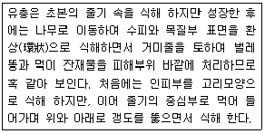
- 미국흰불나방
- 참나무재주나방
- 천막벌레나방
- 박쥐나방
(정답률: 46%)
111. 다음 조경시설물에 보수의 목표(보수시기) 설명으로 옳은 것은?
- 원로 광장의 아스팔트 포장 균열 보수 : 전면적의 15 ~ 20%의 함몰이 생길 때 (3 ~ 5년)
- 원로, 광장의 평판 교체 : 파손장소가 눈에 띌 때 (2년)
- 시소의 베어링 보수 : 베어링이 마모되어 삐걱 삐걱 소리가 날 때 (3 ~ 4년)
- 목재 벤치의 좌판보수 : 전체의 20% 이상 파손, 부식이 생길 때 (5 ~ 7년)
(정답률: 46%)
112. 수목에 시비하는 방법 중 토양 내 시비하는 방법에 해당하지 않는 것은?
- 엽면시비법
- 방사상시비법
- 전면시비법
- 선상시비법
(정답률: 62%)
113. 운영관리계획 중 양적인 변화에 대응한 관리는?
- 개방된 토양면의 확보로 양호한 수분과 토양 조건을 구축
- 자연 발아된 식생의 증식과 생육에 따른 과밀식생의 이식, 벌채
- 조경공간의 구조적 개량으로 경관관리와 양호한 생태계의 확보
- 레크레이션적 기능에서 어메니티 기능 중심으로 구조적 변화
(정답률: 45%)
114. 빛의 조절이나 통제가 용이하며 색채연출이 우수하고, 고출력이 높은 전압에서만 작동이 가능한 옥외 조명의 광원은?
- 나트륨등
- 수은등
- 백열등
- 금속 할로겐등
(정답률: 45%)
115. 그네, 시소 및 미끄럼틀과 관련한 설명 중 틀린 것은?
- 그네 줄 상단의 베어링은 좌우로 흔들리지 않아야 하며 회전에 의해 풀리지 않도록 풀림방지 너트로 고정하고 마모 시에 교체할 수 있도록 해야 한다.
- 미끄럼틀 미끄럼판의 기울기 각도는 설계도면의 기준을 따르고 활주면은 요철이 없으며 미끄러워야 한다.
- 미끄럼틀 최종 활주면은 모래판 및 지면에서 0.6m 미만으로 이격시키고, 활주면 최하단의 앉음판은 0.3m 이상으로 한다.
- 시소의 좌판이 지면에 닿는 부분에 중고 타이어 등의 재료를 사용하여 충격을 줄여야하며 마모가 심하여 철선이 노출되거나 찢어진 것을 사용해서는 안 된다.
(정답률: 69%)
116. 그 자체만으로는 약효가 없으나 농약제품에 첨가할 경우 농약의 약효에 대해 상승작용을 나타내는 보조제는?
- 협력제
- 유화제
- 유기용제
- 증량제
(정답률: 56%)
117. 다음 중 병환부에 직접 살균제를 살포하여 효과를 얻을 수 있는 병이 아닌 것은?
- 흰가루병
- 잿빛곰팡이병
- 녹병
- 시들음병
(정답률: 45%)
118. 잔디초지의 예초높이는 토양표면으로부터 예초될 잔디의 높이를 말하는데 이를 지배하는 요인으로 가장 거리가 먼 것은?
- 잔디의 생육형
- 토양수분
- 해충의 종류
- 잔디의 이용형태
(정답률: 54%)
119. 식물생육에 필요한 양분 중에서 공기로부터 얻을 수 있는 필수원소는?
- P
- K
- Ca
- C
(정답률: 60%)
120. 해충의 구제 방법들 중 기계적 방제법에 해당하는 것은?
- 인공포살(人工捕殺)
- 온도(溫度)처리법
- 접촉살충제살포(接觸殺蟲劑撒布)
- 기생봉(寄生蜂) 이용
(정답률: 55%)